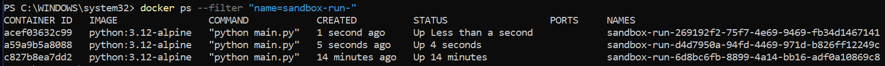
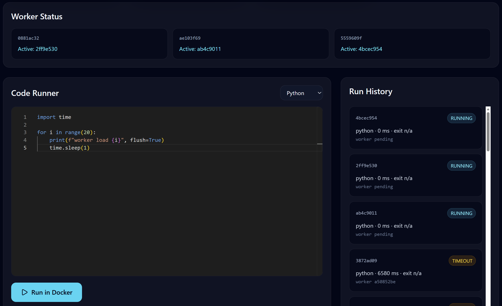
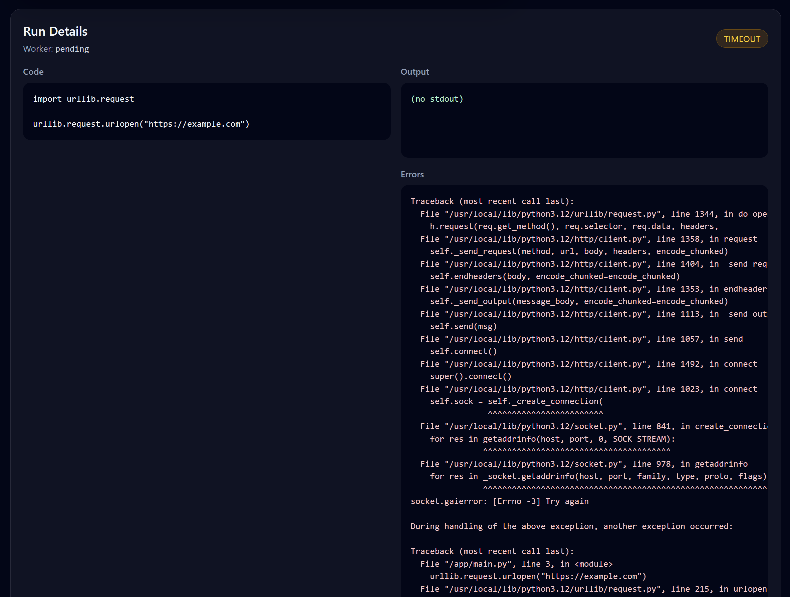

Overview
Sandbox Runner is a distributed multi-language sandbox execution platform for securely running untrusted code inside isolated Docker containers. Supported languages include Python, JavaScript, Kotlin, Java and Go.
The project focused on platform engineering, distributed systems, runtime isolation, horizontally scalable worker architectures, security hardening and modern full-stack development using Kotlin, Redis, Docker and React.
Problem Statement
Secure code execution systems require strong isolation, controlled runtime environments, scalable worker systems and robust resource limits to safely execute untrusted code.
The goal was to build a modern distributed sandbox platform featuring Docker isolation, Redis-based async queues, live streaming and horizontally scalable infrastructure.
Architecture Approach
Distributed Worker Architecture
Runs are processed asynchronously through Redis queues and executed by horizontally scalable worker instances.
Docker Sandbox Isolation
Every execution runs inside isolated Docker containers with disabled networking, runtime limits and security hardening.
Live Runtime Streaming
stdout, stderr and status updates are streamed live to the frontend using Server-Sent Events (SSE).
Worker Observability
The platform includes queue statistics, worker monitoring, active job tracking and dead-letter observability.
Technical Features
A key focus was combining secure runtime isolation, asynchronous worker architecture, containerized infrastructure and modern full-stack development.
Dashboard & Execution UI




Challenges
The biggest challenge was combining secure containerized code execution with asynchronous distributed execution, live streaming and runtime control in a reliable way.
Particularly complex areas included security hardening, worker orchestration, container lifecycle management, cancellation flows and language-specific runtime profiles.
Learnings
The project especially demonstrated the importance of clean infrastructure boundaries, security hardening, event-driven architectures and robust worker systems for modern runtime platforms.